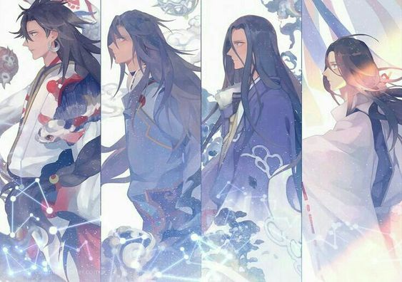

Là kẻ thần bí hành tung bất định chưa bao giờ biểu lộ nội tâm. Ngôn từ thể hiện uy nghiêm bất khả xâm phạm. Mang sức mạnh to lớn. Ngay cả Diêm Ma cũng vô cùng cung kính hắn Hắn chưa từng nói với bất cứ ai mình là ai. Và tới từ nơi nào.
Tsukuyomi (月読 Nguyệt Độc) là thần Mặt Trăng, em trai của Amaterasu. Tsukiyomi được sinh ra từ mắt phải của Izanagi khi ông rửa mặt sau khi trở về từ Suối Vàng. Một hôm Amaterasu sai Tsukiyomi đi thay mình đến dự tiệc của Ukemochi-no-kami (保食神 Bảo thực thần). Ukemochi lần lượt nhìn vào biển, rừng và đồng lúa rồi nôn ra cá, thịt và một chén cơm mời Tsukiyomi ăn. Kết quả là bà bị Tsukuyomi cảm thấy kinh hãi và giết chết. Từ đó, Amaterasu không thèm nhìn mặt em trai nữa, và khi nào có Mặt Trăng thì Mặt Trời đi chỗ khác.

Susanoo-no-Mikoto (スサノオ đọc là Susa-no-O, Nhật Bản thư kỷ ghi là 素盞嗚尊 Tố Trản Ô Tôn, 素戔嗚尊 Tố Tiên Ô Tôn; Cổ sự ký ghi là 建速須佐之男命 Kiến Tốc Tu Tá Chi Nam Mệnh, 須佐乃袁尊 Tu Tá Nãi Viên Tôn) là thần biển và gió bão. Susanoo là em trai của Amaterasu và Tsukuyomi, được sinh ra từ mũi của Izanagi khi ông rửa mặt sau khi trở về từ Suối Vàng. Susanoo làm Amaterasu tức giận và bị đuổi đi. Khi đến huyện Izumo, Susanoo gặp hai thần đất. Họ đã bị một con rắn 8 đầu Yamata-no-Orochi (八岐の大蛇 Bát Kỳ Đại Xà) bắt mất 7 người con gái. Susanoo hỏi cưới cô thứ 8 nhỏ nhất chưa bị bắt là Kushi-inada-hime (奇稲田姫 Kì Đạo Điền Cơ) rồi biến cô thành một chiếc lược giấu trên đầu. Susanoo dùng 8 bình rượu để làm con rắn bị say rồi chặt khúc. Từ đuôi của đại xà, Susanoo tìm được thanh gươm Thảo Thế và gửi tặng Amaterasu để làm hòa.
Là kẻ thần bí hành tung bất định chưa bao giờ biểu lộ nội tâm.
Ngôn từ thể hiện uy nghiêm bất khả xâm phạm.
Mang sức mạnh to lớn,
Ngay cả Diêm Ma cũng vô cùng cung kính hắn
Hắn chưa từng nói với bất cứ ai mình là ai
Và tới từ nơi nào
Truyền thuyết
Chương 1:
Trước đây có một thôn trang cạnh bờ biển.
Thôn trang chịu đủ mọi sự xâm hại của sóng thần. Nhưng người cả thôn sống theo biển, không muốn phải dời đi bờ biển. Vì vậy bọn họ cầu khẩn thần linh phù hộ cho họ bình an. Cuối cùng, thần linh ban cho họ một đứa trẻ.
Đứa trẻ này có khả năng đặc biệt — tiên tri. Nó biết mọi chuyện sắp xảy ra. Từ chuyện bên cửa sổ khi nào sẽ xuất hiện một con bướm tới chuyện sóng thần khi nào sẽ hủy diệt thôn trang, nó biết hết. Nó chỉ người trong thôn cách tránh họa, mà người trong thôn cũng rất kính trọng nó, mọi người sống an an ổn ổn.
Chương 2:
Lần đầu tiên tiên đoán sai, mọi người cũng chỉ cười không trách đứa trẻ. Nhưng từ từ, họ bắt đầu trách cứ, thậm chí còn đánh chửi, trên người hài tử chi chít vết thương. Đứa trẻ sợ bị trừng phạt, bật khóc tiên tri tất cả, nhưng lời tiên đoán càng lúc càng không chính xác. Cuối cùng, có kẻ lên tiếng, nếu đứa trẻ đã mất đi năng lực tiên tri, chi bằng vứt bỏ nó đi, dâng tặng cho thần biển, biết đâu có thể tránh được tai họa. Lần đầu nghe được đề nghị này, ai nấy đều vội vàng phản đối, cho rằng như thế quá tàn nhẫn với đứa trẻ. Nhưng lần thứ hai, lần thứ ba, tiếng phản đối càng lúc càng ít. Cuối cùng, không ai phản đối, tất cả đều đồng ý.
Chương 3:
Đứa trẻ lê lết tấm thân đau đớn, nức nở đi vào bóng đêm vô tận, đi vào đợt sóng lạnh băng dưới ánh nhìn soi mói của thôn làng. Khi đứa trẻ chìm ngập trong nước biển, sóng thần vùng lên từ biển khơi, nhấn chìm thôn làng cùng thôn dân. Nhân loại ngu xuẩn kia, các ngươi có biết khinh rẻ ân huệ của thánh thần sẽ phải trả giá sao không? Có lẽ ngay từ đầu đừng nên đối xử ôn nhu với loài người, chỉ cần dùng sức cưỡng chế họ là được rồi. Đứa trẻ ngây thơ mới nhận được chút xíu lòng tốt dối trá mà nảy sinh tình cảm với nhân loại, mà tình cảm sẽ ảnh hưởng tới phán đoán, tạo nên sai lầm to lớn. Mà đứa trẻ ngây thơ kia cũng đã biến mất vĩnh viễn trong bóng đêm ngày đó. Đúng vậy… Nước biển lạnh như băng kia… Ta không muốn trải qua thêm nữa
Thông tin thức thần Hoang Susabi
– Độ hiếm: SSR
– Vai trò: Sát thương chính
– Thức Tỉnh : Thêm kĩ năng thứ 4 (THIÊN PHẠT · NGUYỆT)
Skill 1 :Tinh Qũy Tấn công đơn thể gây 100% sát thương.
- Lv.2: tăng 5% sát thương
- Lv.3: tăng 5% sát thương
- Lv.4: tăng 5% sát thương
- Lv.5: tăng 10% sát thương
Skill 2 –TINH THẦN CHI CẢNH (nội tại): Khi Hoang hành động sẽ có tỉ lệ 30% tạo ảo cảnh. Khi đang ở trong ảo cảnh, nếu đồng minh sử dụng đánh thường thì Hoang sẽ có tỉ lệ 50% hợp lực đánh chung (giống Cô Hoạch Điểu).
- Lv.2: tỉ lệ tạo ảo cảnh tăng lên 40%
- Lv.3: tỉ lệ tạo ảo cảnh tăng tăng lên 50%
- Lv.4: tỉ lệ tạo ảo cảnh tăng tăng lên 60%
- Lv.5: khi đến lượt của Hoang mà có 6 quỷ hỏa trở lên thì chắc chắn sẽ kích hoạt ảo cảnh.
Skill 3 – THIÊN PHẠT · TINH: Hoang sử dụng 3 quỷ hỏa để thả sao băng tấn công mục tiêu. Sao băng đầu tiên sẽ gây 104% sát thương sau đó giảm dần 25% sát thương mỗi lần. Tổng cộng là 104% + 78% + 58.5% = 240%.
- Lv.2:tăng thêm 5% sát thương
- Lv.3: tăng thêm 5% sát thương
- Lv.4: tăng thêm 5% sát thương
- Lv.5: nếu mục tiêu chết khi đang thả sao băng thì số sao băng còn lại sẽ gây sát thương AOE cho team địch
Skill 4 – THIÊN PHẠT · NGUYỆT:

Kĩ năng này chỉ mở khi Hoang đang ở trong ảo cảnh. Khi đó Hoang sẽ sử dụng tất cả quỷ hỏa để thả sao băng tấn công mục tiêu. Sao băng đầu tiên sẽ gây 120% sát thương sau đó giảm dần 25% sát thương mỗi lần. Tổng cộng sẽ gây 120% + 90% + 67.5% + 50.5% + 37.5% + 28.5% + 21.5% + 16.5% = 432% sát thương nếu đang có 8 quỷ hỏa. Nếu mục tiêu chết khi đang thả sao băng thì số sao băng còn lại sẽ gây sát thương AOE cho team địch.
Ngự hồn đề nghị
- (BEST) Châm Nữ (Công / Công / Crit)
- Minh Ốc (Công / Công / Crit)
- Võng Thiết (Công / Công / Crit)
Hướng dẫn cách chơi Hoang
Giai đoạn:
- Early game: Yếu
- Mid game: Ổn định
- Late game: Rất mạnh
PVP/PVE:
- Rank: Ổn định
- Kết giới: Rất mạnh
- Rắn / Kì Lân: Rất mạnh
- Boss bang: Rất mạnh
Ưu điểm:
- Sát thương rất lớn nếu full quỷ hỏa
- Bộ skill đa dụng
- Nội tại đánh hùa nên có thể đi với team lầy
- Mạnh trong cả PVP lẫn PVE
- Đẹp trai
- Ảo cảnh đẹp
Nhược điểm
- Sợ Mộc Mị như sợ vợ
- Cần người chơi thực sự cứng tay vì bắn Tinh vô tội vạ rất hao mana…